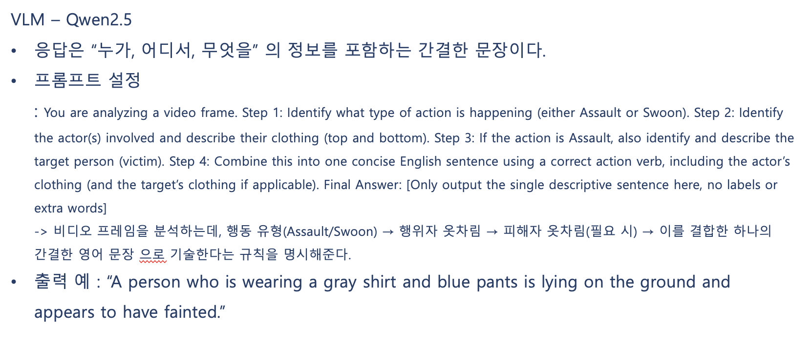
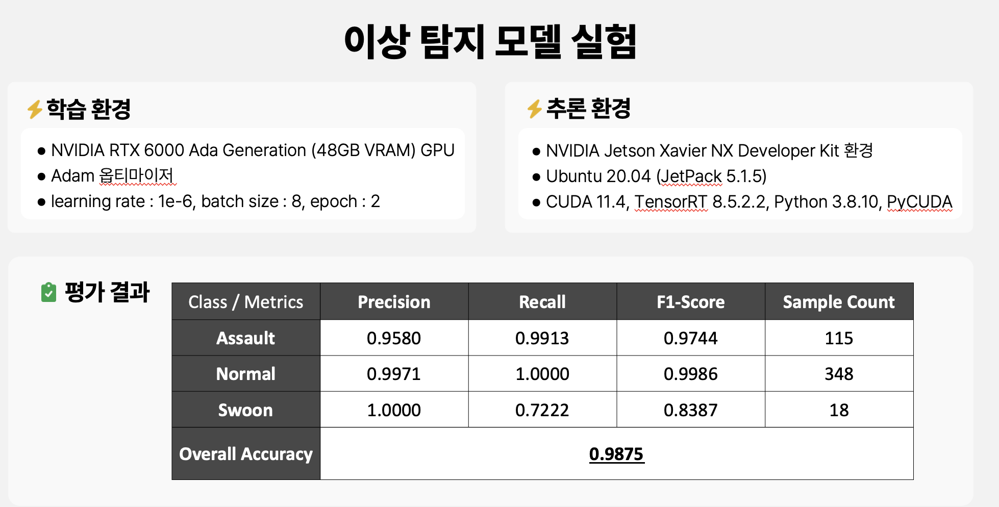
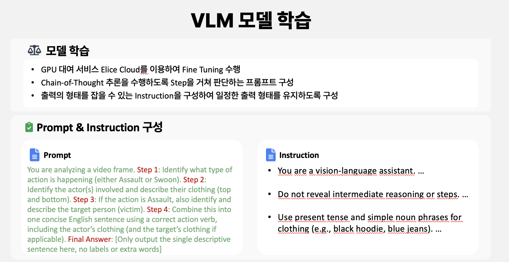
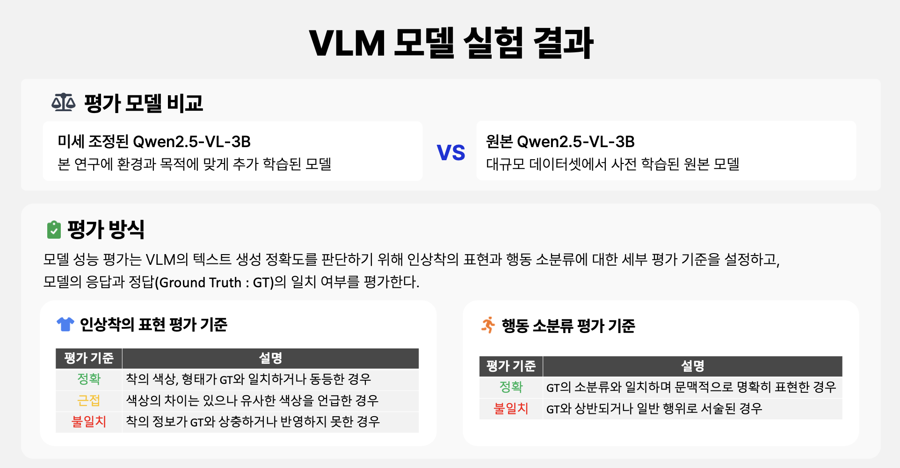
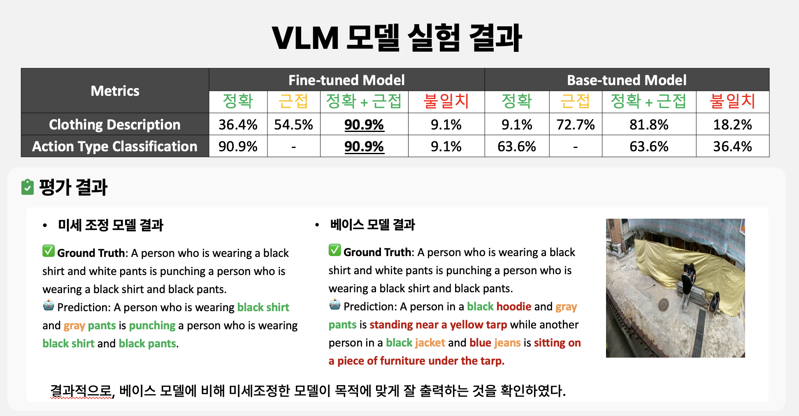
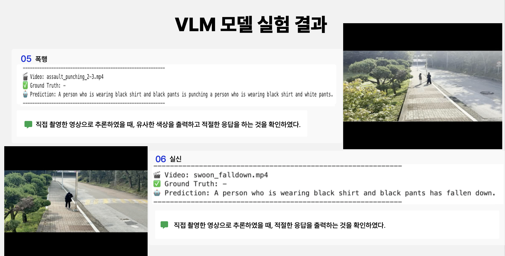
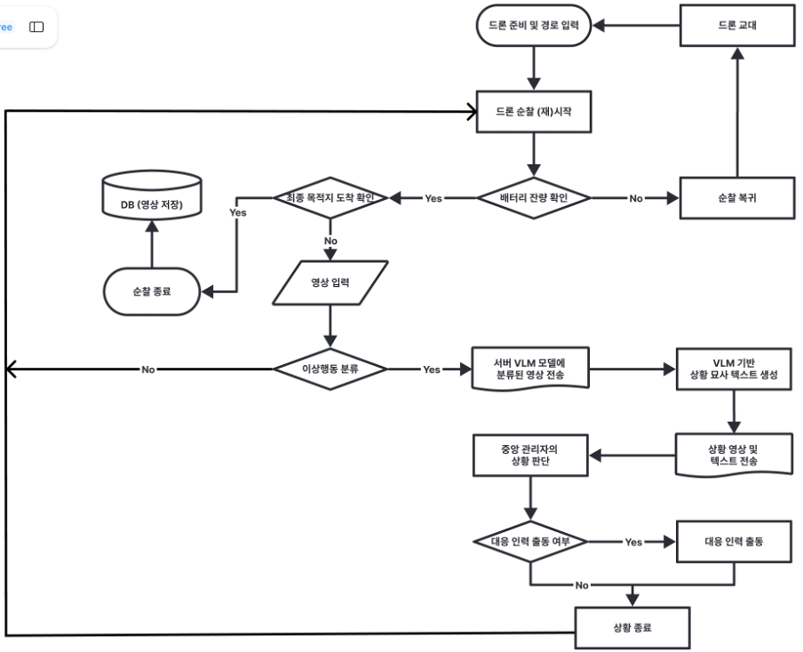
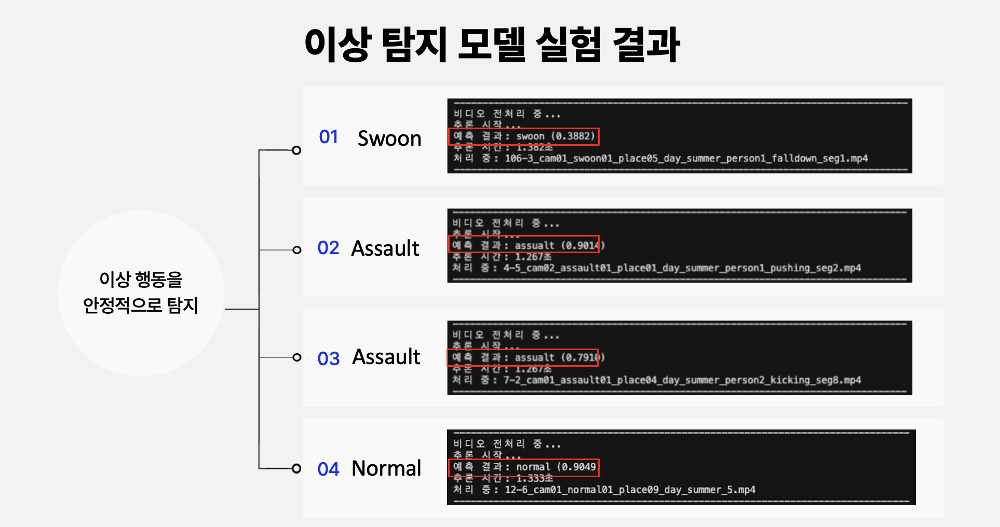
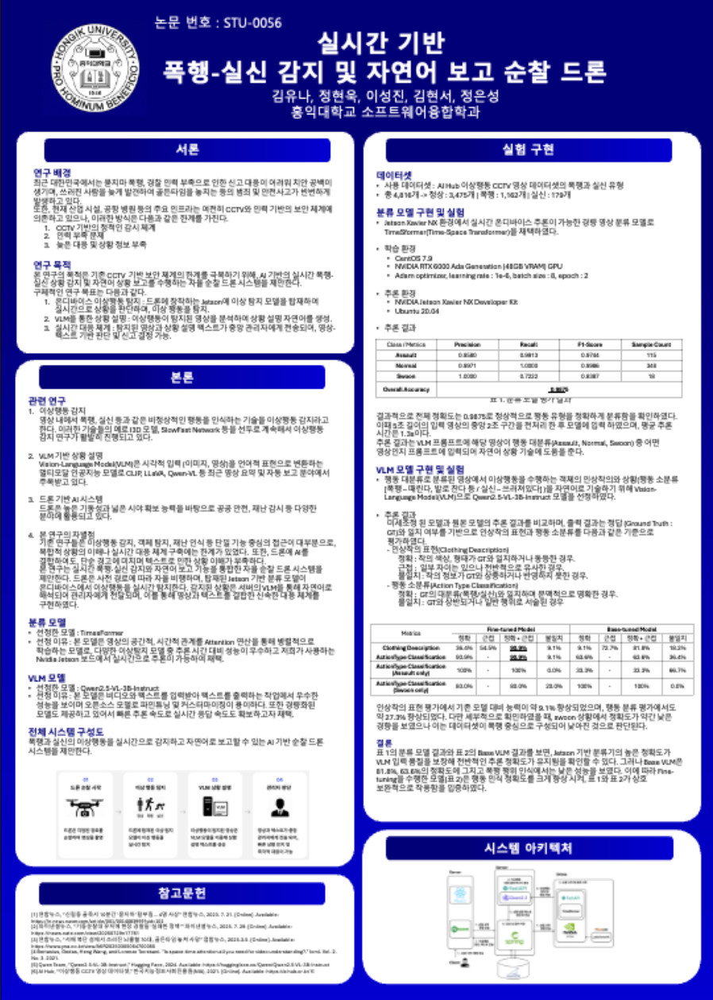

01. Project Overview
이 프로젝트는 드론 기반 자율 순찰 환경에서 폭행, 실신과 같은 이상상황을 실시간으로 감지하고, 감지된 상황을 자연어 텍스트로 설명하여 관리자에게 보고하는 AI 순찰 드론 시스템입니다.
드론은 사전에 지정된 경로를 따라 순찰을 수행하며, 탑재된 카메라로 영상을 수집합니다. 수집된 영상은 이상행동 분류 모델을 통해 정상, 폭행, 실신으로 판단되고, 이상상황으로 판단된 경우 해당 5초 영상과 상황 설명 텍스트가 관리자에게 전달됩니다.
02. Motivation & Goal
기존 CCTV 중심의 보안 체계는 고정된 위치에서 영상을 기록하는 방식이기 때문에 사각지대가 발생하기 쉽고, 관리자가 직접 영상을 확인해야만 상황을 파악할 수 있다는 한계가 있습니다. 또한 폭행이나 실신과 같은 돌발 상황은 초기 대응이 지연될 경우 큰 피해로 이어질 수 있습니다.
본 프로젝트는 이러한 한계를 보완하기 위해 드론의 기동성과 AI 기반 영상 이해 기술을 결합했습니다. 드론이 직접 순찰하며 영상을 수집하고, 온디바이스 분류 모델과 VLM을 활용하여 이상상황 탐지부터 자연어 보고까지 이어지는 실시간 대응 구조를 만드는 것을 목표로 했습니다.
- 드론 기반 순찰을 통해 CCTV 사각지대 한계 보완
- 폭행·실신·정상 상황을 구분하는 영상 분류 모델 구현
- VLM을 활용한 이상상황 설명 텍스트 생성
- 관리자가 영상과 텍스트를 함께 보고 빠르게 판단할 수 있는 보고 구조 구현
03. My Role
Data Preprocessing
Python을 활용하여 AI Hub 이상행동 CCTV 영상 데이터를 학습 가능한 형태로 전처리하고 라벨링했습니다. 폭행, 실신, 정상 클래스를 구성하고, 영상 클립을 모델 입력에 맞게 정리했습니다.
정상 데이터는 이상행동 발생 전 구간을 분리하여 구성했고, 최종적으로 정상 3,475개, 폭행 1,162개, 실신 179개로 구성된 총 4,816개의 영상 클립을 활용했습니다.

VLM Fine-tuning & Situation Text Generation
Qwen2.5-VL-3B-Instruct 모델을 기반으로 이상행동 영상에 대해 파인튜닝을 수행하여, 폭행·실신 상황을 판단하고 관리자에게 전달할 수 있는 자연어 상황 설명을 생성하도록 구성했습니다.
기존 Base VLM이 폭행 장면을 일반적인 움직임으로 설명하는 한계를 보완하기 위해, 영상과 상황 설명 텍스트를 함께 활용하여 이상행동 맥락을 더 잘 이해하고 설명할 수 있도록 학습했습니다. 이를 통해 단순한 라벨 출력이 아니라, 영상 속 인물의 행동과 상황을 문장 형태로 보고할 수 있도록 구성했습니다.






04. System Workflow
전체 시스템은 드론 경로 입력, 자율 순찰, 온디바이스 이상행동 분류, VLM 기반 자연어 설명 생성, 관리자 판단 및 대응 명령의 흐름으로 구성됩니다.

05. Model & Implementation
이상행동 분류 모델
온디바이스 환경에서 실시간 추론이 가능하도록 TimeSformer 기반의 영상 분류 모델을 활용했습니다. 입력 영상은 전처리 후 폭행, 실신, 정상 클래스 중 하나로 분류되며, Jetson Xavier NX 환경에서 평균 1.3초의 추론 시간을 기록했습니다.
VLM 기반 자연어 보고
자연어 상황 설명을 위해 Qwen2.5-VL-3B-Instruct 모델을 활용했습니다. 폭행 및 실신 영상 데이터에 대해 미세조정을 수행하여, Base 모델보다 이상행동의 맥락을 더 정확하게 설명할 수 있도록 구성했습니다.
실험 환경
- 온디바이스 추론: NVIDIA Jetson Xavier NX Developer Kit
- 학습 서버: NVIDIA RTX 6000 Ada Generation 48GB VRAM
- 학습 설정: Adam optimizer, learning rate 1e-6, batch size 8, epoch 2
- 주요 모델: TimeSformer, Qwen2.5-VL-3B-Instruct
06. Experiment Results
6.1 Classification Model Results
온디바이스 이상행동 탐지를 위해 정상, 폭행, 실신 세 가지 클래스를 대상으로 분류 모델을 학습 및 평가했습니다. 실험은 Jetson Xavier NX 환경에서 수행했으며, 5초 길이의 입력 영상 중 중앙 2초 구간을 전처리하여 모델 입력으로 사용했습니다.
학습 환경
- NVIDIA RTX 6000 Ada Generation 48GB VRAM
- Adam Optimizer
- Learning rate 1e-6, Batch size 8, Epoch 2
추론 환경
- NVIDIA Jetson Xavier NX Developer Kit
- Ubuntu 20.04, JetPack 5.1.5
- CUDA 11.4, TensorRT 8.5.2.2, Python 3.8.10
분류 모델 전체 정확도
정상, 폭행, 실신 세 가지 클래스에 대해 높은 분류 정확도를 기록했습니다.
평균 추론 시간
5초 영상 입력 기준 평균 1.3초의 추론 시간으로 실시간 대응 가능성을 확인했습니다.
| Class / Metrics | Precision | Recall | F1-Score | Sample Count |
|---|---|---|---|---|
| Assault | 0.9580 | 0.9913 | 0.9744 | 115 |
| Normal | 0.9971 | 1.0000 | 0.9986 | 348 |
| Swoon | 1.0000 | 0.7222 | 0.8387 | 18 |
| Overall Accuracy | - | - | 0.9875 | - |

6.2 VLM Results
Qwen2.5-VL-3B-Instruct를 기반으로 폭행 및 실신 영상에 대해 미세조정을 수행하고, Base VLM과 Fine-tuned VLM의 출력 결과를 비교했습니다. 평가는 인상착의 표현과 행동 대분류 정확도를 기준으로 수행했습니다.
Fine-tuned VLM 행동 분류
미세조정된 VLM은 이상행동의 대분류를 90.9% 정확도로 설명했습니다.
폭행 장면 인식
Fine-tuned VLM은 평가에 사용한 폭행 장면을 모두 명확히 인식했습니다.
인상착의 표현
정확+근접 기준으로 인물의 착의 정보를 90.9% 수준으로 설명했습니다.
Base 대비 행동 분류 향상
Base VLM의 행동 분류 정확도 63.6%에서 Fine-tuned VLM 90.9%로 향상되었습니다.
| Metrics | Fine-tuned 정확 | Fine-tuned 근접 | Fine-tuned 정확+근접 | Fine-tuned 불일치 | Base 정확 | Base 근접 | Base 정확+근접 | Base 불일치 |
|---|---|---|---|---|---|---|---|---|
| Clothing Description | 36.4% | 54.5% | 90.9% | 9.1% | 9.1% | 72.7% | 81.8% | 18.2% |
| Action Type Classification | 90.9% | - | 90.9% | 9.1% | 63.6% | - | 63.6% | 36.4% |
Fine-tuned Model
Ground Truth와 비교했을 때, 미세조정된 모델은 폭행 상황을 더 명확하게 인식하고 인물의 행동을 목적에 맞게 설명했습니다.
Base Model
Base 모델은 동일한 영상에 대해 폭행 맥락을 정확히 포착하지 못하고, 일반적인 장면 설명에 가까운 문장을 생성하는 경우가 있었습니다.
07. Source Code
프로젝트의 구현 코드는 아래 GitHub 저장소에서 확인할 수 있습니다.
GitHub Repository 보기 →08. Paper / Presentation
본 프로젝트는 2025 대한전자공학회 추계학술대회 논문으로 작성되었으며, 아래에서 발표 포스터와 논문 파일을 확인할 수 있습니다.
Presentation Poster

대한전자공학회 하계학술대회 발표 포스터
Paper File
논문 PDF 파일은 아래 버튼을 통해 확인할 수 있습니다.
논문 PDF 보기 →